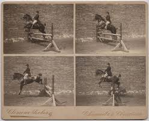
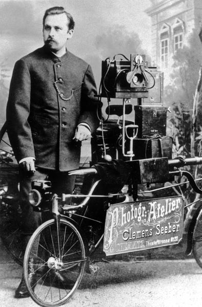
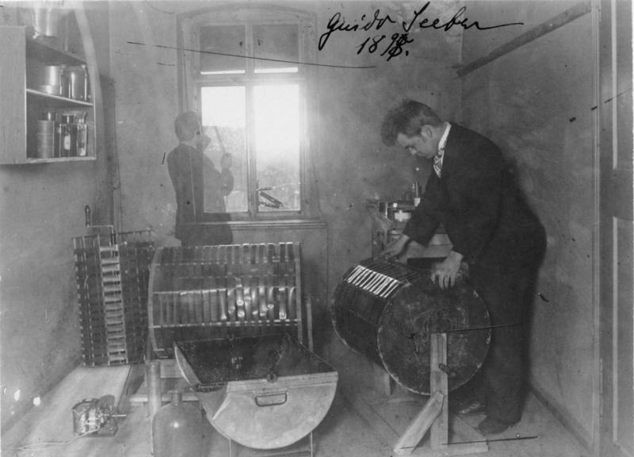
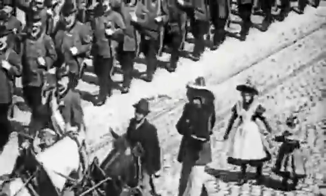
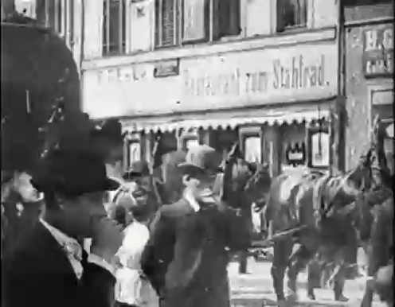
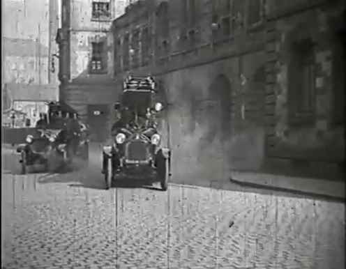

German films
|  |
|---|

Clemens Seeber
Amongst all the many people whose lives were profoundly changed by the first showings of the Lumière films in 1896 was the

Guido Seeber c. 1898
Saxon photographer Clemens Seeber. Friedrich Clemens Seeber (1851-1905) had established himself as the leading photographer in
the town of Chemnitz, third city of Saxony after Leipzig and Dresden, and was one of Gerany's earliest photo-journalists. During
the summer of 1896, he had the opportunity to see the Lumière films at the Ausstellung des Sächsischen Handwerks und Kunstgewerbes
in Dresden (20 June-23 August), an event also filmed by the Lumière operators. On his return to
Chemnitz, Seeber and his son Guido purchased a camera/projector from Berlin film pioneer Oskar Messter (the Lumière « cinématographe »
was still not yet for sale) and on 5 September 1897 gave the first showings of „lebender Photographien“ (living photographs) in
Chemnitz at the Varieté Mosella-Saal, showing early Meisster travel documentaries („Reisen Photographien“).
|  |
|---|
Clemens' son, Friedrich Konrad Guido Seeber (1879-1940) was to be one of the first great German cinematographers amd a key figure in the development of German film. Father and son began to make their own films in May 1898, with Guido acting as operator. several titles are known from 1898; they are all news-films of a relatively uexeptional nature that essentially extended the work of te Seebrs as photo-journalists. The first film was König Albert von Sachsen wird in Chemnitz empfangen, announcing a forthcoming visit by the Saxon King. Schützenzug der privaten Schützengesellschaft in Chemnitz am 31.5.1898, a parade of a local sharpshooting club (an important tradiiion in Germany and Switzerland), followed at the end of the year and a similar paarde, Schützenzug in Leisnig in Sachsen am 26.6.1898 was filmed in Leisnig in June. Two days later they shot Ein Lokomotivtransport der Sächsischen Maschinenfabrik in Chemnitz durch die Straßen am 28.6.1898 nachmittags 2 Uhr. In August they made Seine Majestät König Albert von Sachsen passiert die Interimsbrücke bei dem Wettin-Bundesschießen in Döbeln am 15.8.1898, a shooting contest, and Alarm bei der Berufsfeuerwehr in Chemnitz am 19.8.1898 (A fire alarm).
|  |
|---|
Several, perhaps all, of these films may well survive in the German archives but we are endebted to a Herr Rainer of Chemnitz for the two films that have been made publicly available - Schützenzug der privaten Schützengesellschaft in Chemnitz am 31.5.1898 and Ein Lokomotivtransport der Sächsischen Maschinenfabrik in Chemnitz durch die Straßen am 28.6.1898 nachmittags 2 Uhr.
The eventual appearance of the « Lokomotivtransport », pulled by many horses, in the second film is very impressive and would, had I been a small child in the streets at the time, have almost certainly have given me nightmares.
Herr Rainer includes a fragment in another compilation that would seem probably to come from Alarm bei der Berufsfeuerwehr in Chemnitz am 19.8.1898
|  |
|---|